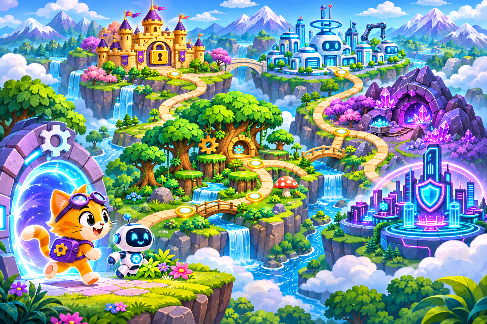

🐱 Miau & Bit A Grande Aventura
Fase 1-1 · Primeiros Pulos · ⚙️ 0/8 · ❤️ 3
✨ Escolha seu aventureiro
Quem vai explorar o Reino Miau & Bit?
✨


✨ Bem-vindo ao Reino Miau & Bit!
Uma aventura começa em cada caminho.
🤖 Mundo 3Cidade dos RobôsEm breve
💎 Mundo 4Caverna dos DadosEm breve
🛡️ Mundo 5CyberlândiaEm breve
🌳 Floresta dos Algoritmos
Complete as cinco fases da floresta, supere os desafios e ajude Bit!
Teclado: ← → ou A D para andar · Espaço / ↑ para pular
Edição especial do Mundo 1: cinco fases, escolha entre Miau e Luma, mapa do reino, efeitos e sons. Mundos 1 e 2 jogáveis; mundos 3 a 5 são prévias.